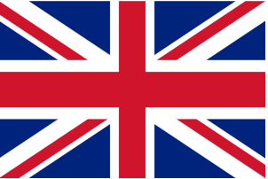

| Saja Andersson | Sofie Os | Jonas Møgen | Vegard Vollebekk |
Vårt prosjekt har vart å lage en webside som vi valgt å kalle for Osloguiden.
Dette er først og fremst en webside for nyinflyttede til Oslo, der man kan få tips på ting man kan gjøre i byen.
Alt ifra severdigheter, shopping, restauranter, uteliv, kultur og aktiviteter. Websiden er enkel og lettnavigert,
der brukeren på enkelt vis finner ut information.
Alle medlemmer i prosjektet hadde gode ideer på funksjoner som skulle finnes på siden. I forprosjektrapporten hadde vi forventninger og mål som var satt til at brukeren kunne intregere mer med siden, enn hva det dessverre går å gjøre på slutresultatet. Dog så har webbsiden et stort potensial til å både bli bedre og mer anvansert.
Vi har en menylinje med dagens dato og klokkeslett øverst på siden. Menylinjen/headeren er i en fixed posisjon og henger hele tiden med når man scroller nedover.
Menyen har syv valg: “Startside”, “Restauranter”, “Uteliv”, “Shopping”, “Severdigheter”, “Kultur” og “Aktiviteter”. Alle disse er linker til undersider.
Går man for eksempel inn på “Restauranter” vil man kunne scrolle nedover og se steder å spise delt inn etter type kjøkken. Hver restaurant eller cafe har litt tekst og et bilde.
Finner man et sted som ser interessant ut kan man trykke “Les mer”. Da kommer det opp en boks med litt mer informasjon og et litt større bilde. Øverst til høyre i boksen er det en X som lukker boksen vet et klikk. For å få opp og igjen boksene har vi brukt en jQuery funksjon. På sidene “Restauranter” og “Uteliv har vi en kommentarfunksjon.
Denne er ment for at besøkende på siden kan dele sine erfaringer om stedene. “Uteliv” har i tillegg en lik-funksjon. Den virker på samme måte som på facebook:
likte du stedet, så kan du trykke på “lik” for å fortelle det til andre.
Til høyre for menylinjen har vi laget en værfunksjon med php som henter data fra yr.no.
Avhengig av hva slags vær det er kommer det opp et hjemmelaget bilde som beskriver været og temperaturen. Vær-boksen henger også med hvis man scroller nedover på siden.
På vårt første møte hadde vi en brainstorming der vi alle fikk komme med forslag på ideer. Når vi hadde blitt enige så disskuterte vi hvordan vi skulle legge opp prosessen. Alle ble enige om at vi skulle bruke oss utav to metoder, SCRUM og prototyping. Først lagde vi en skisse på hvordan vi ville at siden skulle se ut og hvilke funksjonaliteter den skulle ha. En prosjektleder utsågs og vi begynte lage en forrapport på hva som skulle gjøres og hvem som skulle gjøre vad. Ut ifra planen arbeidet vi med egne prosjekt for å tilslut nå frem til et felles mål. En i gruppa fikk oppgaven å lage et gemensamt prosjekt på Github som vi alle har brukt oss utav. Etter var endring så bestemte vi oss for å dele det. Fra første start har vi også hatt kontakt via facebook der vi lagde en felles side for å kommunisere med hverandre. Der har vi bestemt alle møter som vi hatt og delt nye ideer.
Innhenting av informasjon og bilder, og grunnarbeidet ble begynt på den første uken og fortsatte in på andre uken. Mye informasjon skulle in på siden og det tok lengre tid enn planlagt. All informasjon og bilder las in i tabeller. Anledningen til det var fordi at det var enklere da å få samme stil på alle undersider og det ble enklest å gjøre det sån for å få det bra anpasset til mobil. I uke to skulle alt av informasjon og undersider settes sammen hvilket inte gjennomførdes førræn starten av uke 3. Det endte med at vi jobbet videre med det vi hadde tenkt å bli ferdige med i uke en og det gjorde at uke tre ble ganske så hektisk. Designet ble forandret en del denne uken og ting begynte å henge sammen. Les mer-knappene var slik vi ville ha dem og det virket som om vi var tilbake der vi hadde tenkt. Men så dukket det jo opp diverse hindringer underveis. Kommentar-knappene og lik-knappene har gitt oss mye trøbbel og har stjålet en del tid. I tillegg fikk vi litt problemer med GitHub og noen ting måtte gjøres både to og tre ganger. Men, i slutten av uke tre ble vi faktisk ferdige, akkurat i tide til innlevering.
Av verktøy så har vi brukt programmer som Sublime Text, Github, Linux og Apache. Vi har også anvendt oss av internett der google har vart et sentralt verktøy for informasjon og bilder. Vi har også anvendt oss av kameraer og telefoner for egne bilder. Vi har arbeidet både på PC og mobiltelefon for å kunne få siden så universellt utformet som mulig. Når vi har skrevet rapportene så har vi også brukt oss av google docs der vi alle hatt tilgang direkte. Av teknologier så har vi valgt å brukt oss utav HTML, CSS, PHP og JQUERY. Det mest brukte har vart HTML og CSS og litt mindre av PHP og JQUERY foreløpig.
Vår store utfordring i dette prosjekt var å bli satt sammen med mennesker med forskjellige interesser og forskjellige smak. Fra begynnelsen ville alle gjøre ulike websider hvilket gjorde at vi hadde uenigheter om hva som skal gjøres og hvordan.
Prosjektledere som ble satt i begynnelsen ble også bytta på i midten av prosjektet hvilket gjorde at strukturen ble litt endret.
På tross av vårt ulike utgangspunkt, klarte vi allikevel å bli enige tilslutt. Det viser at vi alle i slutenden har vært samarbeidsvillige.
Det hadde dog i dette tilfellet vært mye enklere dersom oppgavens tema var bestemt på forhånd.
I begynnelsen av prosjektet fungerte alt bra, men etter en tid fant vi ut av at mange av de funksjonaliteterne som vi ville ha fra begynnelsen ikke gikk an å gjennomføre.
Vi ble alle enige om at siden hadde vart best egnet for å ha en database. Uten det blir det veldig mye koding og den konklusjonen ser vi også nå når prosjektet er ferdig.
At ikke dette gikk å gjennomføre beror fremst på kort tidsfrist og brist på ferdigheter innom det området.
Strukturen i kodingen har også blitt påvirket av dette.
Ambisjonsnivået fra begynnelsen var satt for høyt enn det som kunne leveres.
Användandet av Github fungerte dålig i begynnelsen da ingen av gruppmedlemmene hadde brukt det tidligere. Mye blev feil synkronisert og med litt dålig kommunikasjon från vår side så satt flere å jobbe med samme side, hvilket ledde til at noens endringer forsvant og tidligere arbeid fikk gjøres på nytt.
Dette lærte vi oss etterhvert og nå i sluttet av prosjektet så har vi fått god inblikk i programmet og kan arbeide videre med det.
Kommunikasjonen via facebook har fungert bra med avstemning og booking av møter. Det har skjedd at et innlegg ikke har blitt sett men i det store hele så har det fungert bra.
Vi har brukt mye tid på HTML koding og CSS der har vi gjort endringer helt frem til siste dag. Det er fordi at man har endt opp med å jobbe lenger enn planlagt på en spesiell ting, isteden for å gå videre å bygge på noe annet. Tidsskjemaet har da delvis på grunn av dette blitt litt tight, noe som også førte til at vi ikke fikk gjennomført alle planene vi hadde for webbsiden.
Timeplanen hadde først en plan om at vi hadde en uke på å hente all informasjon til siden men den ble utsatt nesten en ekstra uke til. En stor del av dette var dels fordi at vi ikke brukte databas fra første start og at vi ikke kommuniserade ordentlig på Github.
En ubalans i strukturen gjorde også at mange medlemmer i prosjektet satt å jobbe me litt av hvert og det er vel den allre viktigeste lærdomen som vi tar med oss. At en god og gjenomtenkt struktur sætts fra første start. Det betyr at man legger mer tid på selve planleggingen. I det virklige livet koster det mindre penger enn hvis man gør feil når man er godt igang med prosessen.
Til tross for det og til tross for at målet ikke ble uppnått så fikk man masse kunnskap på veien med mye lærdomer om seg selv og andre. Vi har fått en inblick i nya kodinger og fått den erfarenheten å forsøke finne ut løsninger på ting som ingen har kunnskap i fra før. Vi tar også med oss mye lærorik feedback fra mennesker runt omkring oss.
En videreutvikling av siden er å lage en database der vi har mulighet å legge til de funksjoner som var satt ifra begynnelsen, så som:
Eksempel:
Her er en visualisering på hvordan det skulle kunne sett ut og hvordan man får frem forslag. Når man trykker på værikonen så kommer då forslag på ting å gjøre eller se, beroende på hvilket vær det er ute. Denne værfunksjon er da, som idag, koblet til yr.no
Eksempel:
Brukeren vil få samme melding på vår side som f.eks på google der man får muligheten å tillåte brukerens nuvarende platsen. Då går posisjonen in i databasen og matches med lokasjon till aktiviteter/severdigheter/restauranter/uteliv og kultur som finnes på siden.
Eksempel:
Her er et eksempel på hvordan intressebokser fungerer. (Nå er denne ikke programmert, uten det er bare en visualisering) Her velger brukeren hvilket område den er mest intressert i og med hjep av å trykke på knappen "Vis forslag", får den opp aktiviteter basert på valget. Dette fungerer då sån at en matchning gørs i databasen, som finner frem alt på siden som passer til det valget som nettopp gjorts.
Brukeren har da også mulighet å legge til info på siden og den skal også utvikles til en mer brukervennlig side for utenlandske. Måler her er å fremst ha siden også på engelsk. Der skal det då finnes en ikon med engelsk flagg som man kan trykke på, å som da endrer hele siden til engelsk.

En annen videreutvikling er at også gjøre den maksimalt brukervennlig for funksjonshemmede der man f.eks lager et eget stilark med større tekst for de synskadede. Også en bra tabb-funksjon som gjør at man kan "tabba" sig igjennom siden. Dette virker nå bare på hovedmenyen.
Mulighetene er mange men med begrenset tid så måtte vi bare løse situasjonen så godt vi kunne.
CSS strukturen skal endres så at alle “commentsboks” går under samme class, isteden for ett eget ID som de har idag. Det samme gjelder for alle “les-mer” funksjoner. Det vil gjøre en stor forandring i kodingen och det vil også gjøre den mer lettleselig og mer brukbar i fremtiden når fler ting skal in på siden.